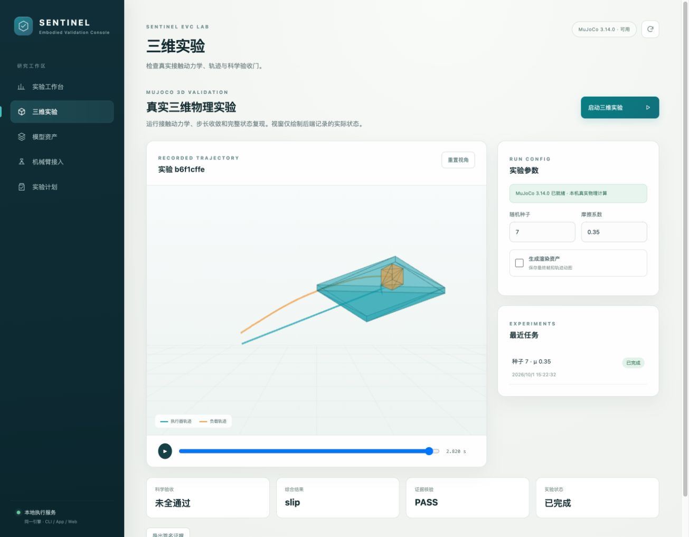

The action is the binding.
Plans, model/profile identity and current context travel together. A modified suffix, changed scene or stale observation cannot inherit an unrelated verdict.
ROBOT POLICY VERIFICATION · OPEN RESEARCH
An execution gate for transformed robot plans, with single-use permits and independently verifiable evidence.
Sentinel EVC Lab · LancerLSY
01 / DEMONSTRATION
02 / OVERVIEW
Robot policies produce action blocks that may be retimed, repaired, transformed between frames or spliced before execution. A verdict on the original plan does not automatically cover the resulting motion. Sentinel EVC binds the verification decision to the final action and current execution context.
The local research workbench combines final-plan checks, bounded certificate reuse with full fallback, a single writer to the controller and signed evidence. Separate research profiles evaluate UR5e motion, WorldGuard consequence prediction and SmolVLA action reconstruction on recorded SO100 data.
03 / METHOD
Plans, model/profile identity and current context travel together. A modified suffix, changed scene or stale observation cannot inherit an unrelated verdict.
The UR5e study reuses only a matching static prefix. Dynamic rollout always starts from frame zero; an invalid parent record triggers full validation.
Submitted, accepted and observed commands are distinct. Revocation blocks new old-generation submissions; recorded events and digests support independent verification.
The product core supports bounded numeric and fixed contact profiles. Trained neural models and the UR5e study are separate research profiles; a live robot motion adapter is not enabled.
Read the mechanism and design trace04 / RECORDED 3D REPLAY
Actual saved joint positions, forwarded through the pinned MuJoCo model. Schematic link geometry, without CAD meshes or new dynamics. These two examples were selected after review; outcome labels apply to the whole trajectory, not the current frame.
05 / EXPERIMENTS
Six scenario classes compare four policies on the same roots. A separate reviewer uses denser static sampling and 1 ms MuJoCo replay without importing the gate runner.
106 static-prefix reuses and 74 full fallbacks. Incremental validation costs 147.65 ms including the parent, versus 48.74 ms for full validation: no speedup claim. These are fixed-order observations on constructed cases, not a natural-distribution holdout or continuous collision proof.
Methods, denominators and cost accountingA frozen vision-language backbone with a fine-tuned action expert. The pinned base and development-selected overlay use identical sampling noise in one paired held-out evaluation.
Action reconstruction, not physical robot task success. Windows overlap; the independent unit is the episode. Dataset-native physical units are undeclared.
Action MAE / training action standard deviation
63.46% lower normalized MAE
600 fresh roots, six scenarios, four sibling plans per root. The trained state and visual ensembles keep their original calibration; difficult cases remain in the comparison.
Unsafe selections / 100 roots · lower is better
Full scenario results and uncertaintyMUJOCO PHYSICS-PROFILE FALLBACK
A separate 5 s MuJoCo profile evaluates 100 new low-friction roots. Its 4.8 s candidate has 0/100 unsafe selections and 100/100 tray endpoint tasks, at three times the 1.6 s duration.
The rule assumes μ_min = 0.015; friction is not sensed. The 3.2 s candidate was also safe in this sample but rejected by the conservative rule. Zero observed failures has a 3.70% Wilson upper bound. This profile is not deployed and does not repair the original neural gate.
Fallback rule and retained results
GPU measurements: RTX 4090 D (24 GB). RTX 5090 is an unmeasured target configuration. Every chart uses retained result files, available with source hashes in the evidence download.
Download chart data + source identities06 / RESEARCH WORKBENCH

The installable CLI and macOS App share a local engine. Run numeric and fixed MuJoCo contact profiles, replay recorded trajectories and export signed evidence bundles.
Research prototype. The macOS App is locally built without distribution signing or notarization; imported models do not acquire motion permission. The physical robot port remains read-only.
Installation and supported capabilities07 / REPRODUCE
git clone https://github.com/LancerLSY/sentinel-evc-lab.git
cd sentinel-evc-lab
python3 -m venv .venv
source .venv/bin/activate
python -m pip install -e ".[physics]"
python -m sentinel_evc serveStart from source with Python 3.10+, or use the interactive installer to choose a core or physics profile and build the macOS App. The CLI prints the local workbench address; simulations write recorded outcomes and evidence.
GPU training uses a separate pinned environment. Model overlays require the original frozen SmolVLA base/backbone; they are not standalone policy checkpoints.
Training, calibration and evaluation commandsThe release index includes sizes and SHA-256 digests; archives contain per-file identities and licenses. Sentinel code is MIT; MIT does not grant patent rights. See the repository for upstream attribution and the core mechanism's patent notice.
Asset index and checksums08 / CITATION
Use the repository citation for the current software and simulation artifacts. A paper citation will be added alongside its arXiv record.
@misc{sentinel_evc_lab_2026,
title = {Sentinel EVC Lab},
year = {2026},
url = {https://github.com/LancerLSY/sentinel-evc-lab},
note = {Research software and simulation evidence}
}